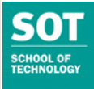

Pandit Deendayal Energy University’s 100 acre campus is located in Gandhinagar, which is the capital city of Gujarat and located 23 Km North from a well developed city called Ahmedabad with a population of 8 million people. The city is famous for its remarkable cultural development and social life.
School of Petroleum Management offers M.B.A. in (a) Energy & Infrastructure and (b) General Management, Ph.D., Post Graduate Diploma in Petroleum Management for Executives (PGDPM-X) and Management Development Programmes.
School of Petroleum Technology offers B.Tech., M.Tech. and Ph.D. programs in Petroleum Engineering. It is academically engaged in creating a high quality talent pool for the hydrocarbon sector across the entire value chain.
School of Technology offers B.Tech. in the fields of Civil, Electrical, Mechanical, Chemical, Computer & ICT besides the Ph.D. Programs in the above areas. It also offers M.Tech in Nuclear & Solar Engineering and other disciplines.
School of Liberal Studies offers four year Bachelor degree programme B.A (Hons.), B.B.A (Hons.), B.Com (Hons.) in the field of Liberal Studies, M.A. in English / Public Administration / Politics and International Relations / Psychology / Economics / Mass Communication and M.Com as well as the Ph.D. programs in all areas.